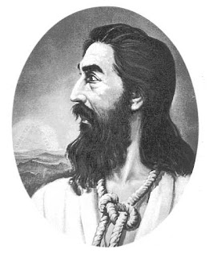
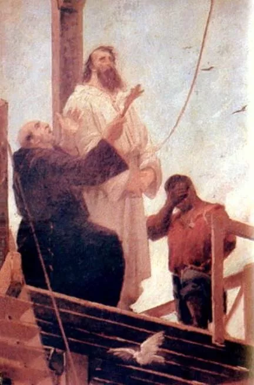
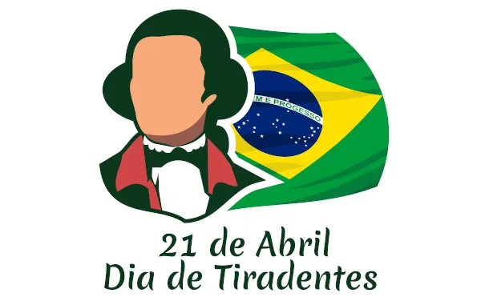

Joaquim José da Silva Xavier, o Tiradentes

Origens e Primeiros Anos
Joaquim José da Silva Xavier, conhecido como Tiradentes, nasceu em 12 de novembro de 1746, na Capitania de Minas Gerais. De família humilde, após a morte prematura dos pais, Tiradentes teve que trabalhar desde cedo, exercendo diversas funções, incluindo a de dentista amador, o que lhe rendeu o apelido pelo qual ficou conhecido.
Carreira Militar e Ideais Republicanos
Tiradentes ingressou na carreira militar, alcançando o posto de alferes. Influenciado pelos ideais iluministas, ele se tornou um republicano convicto, sonhando com uma sociedade mais justa e igualitária.
A Inconfidência Mineira

A Inconfidência Mineira foi um movimento organizado em 1788, inspirado pela independência dos Estados Unidos e pelos ideais iluministas. O objetivo era estabelecer uma república independente em Minas Gerais, livre da pesada carga tributária imposta pela Coroa Portuguesa.
O Plano e a Traição
Os inconfidentes planejavam um levante contra as autoridades coloniais. No entanto, o movimento foi traído por um dos seus membros, Joaquim Silvério dos Reis, que denunciou o plano em troca do perdão de suas dívidas.
Prisão e Julgamento
Após a delação, Tiradentes foi preso e submetido a um longo processo judicial. Durante o julgamento, assumiu toda a responsabilidade pelo movimento, numa tentativa de proteger seus companheiros.
A Execução de Tiradentes

Condenado à morte, Tiradentes foi enforcado em 21 de abril de 1792. Sua execução teve um forte impacto na sociedade da época e marcou profundamente a história do Brasil.
Legado e Heroificação
Com a Proclamação da República, Tiradentes foi transformado em herói nacional. Sua imagem foi idealizada como mártir da independência e símbolo da luta contra a opressão.
Tiradentes na Cultura Popular
A figura de Tiradentes permeia a cultura popular brasileira, sendo retratado em livros, filmes e obras de arte. Sua história continua a inspirar gerações.
O Dia de Tiradentes

O dia de sua morte, 21 de abril, é feriado nacional no Brasil, conhecido como Dia de Tiradentes. É uma data para refletir sobre a liberdade e os direitos civis.
Conclusão
Tiradentes é lembrado como um herói que sacrificou sua vida pela liberdade do Brasil. Sua história é um lembrete da importância da coragem e da convicção em face da injustiça.